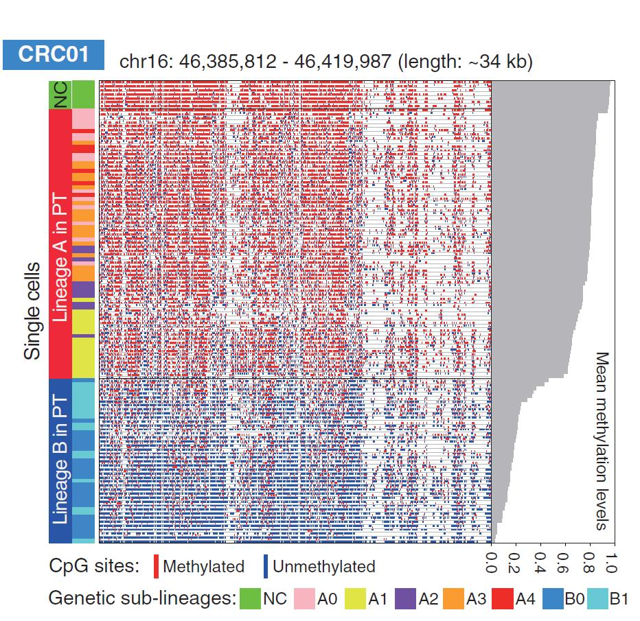
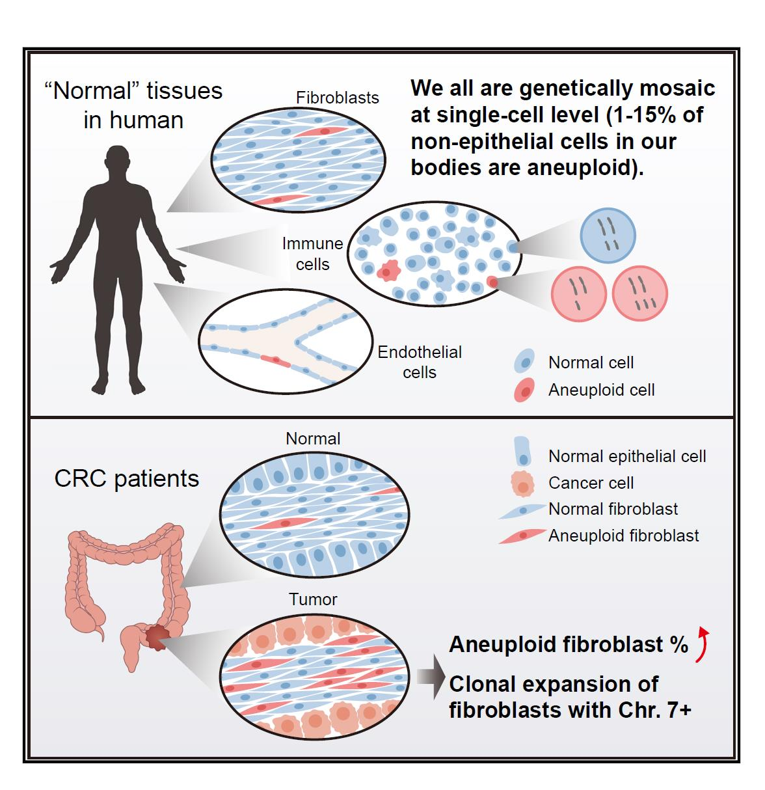

BIAN LAB
Research Interests
We use single-cell multiomics sequencing technique and bioinformatics method to explore important scienctific questions.
1. Molecular mechanism of human reproductive disorders;
2. Dynamic regulatory mechanism of tumorigenesis, progression and metastasis;
3. Early diagnosis of cancer.
Selected Publication
1. Shuhui Bian*, Yu Hou*, Xin Zhou*, Xianlong Li*, Jun Yong*, Yicheng Wang*, Wendong Wang, Jia Yan, Boqiang Hu, Hongshan Guo, Jilian Wang, Shuai Gao, Yunuo Mao, Ji Dong, Ping Zhu, Dianrong Xiu, Liying Yan, Lu Wen, Jie Qiao#, Fuchou Tang#, Wei Fu#. Single-cell multiomics sequencing and analyses of human colorectal cancer. Science 362, 1060–1063 (2018).
2. Yuan Zhou*, Shuhui Bian*, Xin Zhou*, Yueli Cui*, Wendong Wang, Lu Wen, Limei Guo, Wei Fu#, Fuchou Tang#. Single-cell multiomics sequencing reveals prevalent genomic alterations in tumor stromal cells of human colorectal cancer. Cancer Cell, https://doi.org/10.1016/j.ccell.2020.09.015 (2020).
Recuitment
本课题组长期招聘博士后，提供有竞争力的薪酬和福利待遇，欢迎热爱科研的有志之士加入！具有单细胞组学、生物信息学、机器学习、类器官培养、基因编辑等实践经验者可优先考虑。 本课题可接收研究生（含推免生、直博生、统考生），欢迎具有生命科学、基础医学、生物信息、计算机、数学、农学以及相关专业的同学积极联系。联系邮箱：bianshuhui@njmu.edu.cn。
Single-cell multiomics sequencing and analyses of human colorectal cancer
Read more about

Publication category: Cancer epigenetics
, Open in new window
Single-Cell Multiomics Sequencing Reveals Prevalent Genomic Alterations in Tumor Stromal Cells of Human Colorectal Cancer
Read more about

Publication category: Tumor microenvironment
, Open in new window